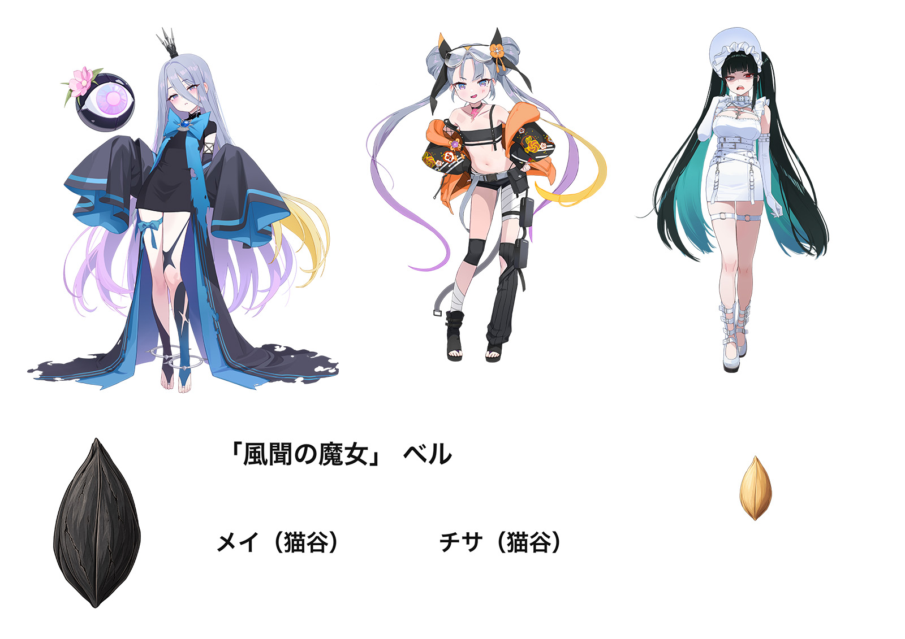

| ID | 준비물 | 출력 크기 | 사용 컷 |
|---|---|---|---|
| CHB004-03 | 벨_마녀 | 144.5 × 170.2 mm | P02-S06-C06, P02-S06-C07, P02-S06-C08 |
| CHB004-01 | 메이_고향 | 111.8 × 160.8 mm | P02-S06-C06 |
| CHB005-01 | 치사_고향 | 90.6 × 160.8 mm | P02-S12-C01 |
| NP028 | 「風聞の魔女」ベル 이름표 | 128.4 × 23.6 mm | P02-S06-C06 |
| NP029 | 「メイ（猫谷）」이름표 | 80.4 × 21.3 mm | P02-S06-C06 |
| NP030 | 「チサ（猫谷）」이름표 | 80.4 × 21.3 mm | P02-S12-C01 |
| PR049 | 씨앗 | 22.4 × 30.8 mm | P02-S19-C03 |
| PR057 | 타버린 씨앗 그림 | 58.8 × 79.7 mm | P02-S26-C01 |
PSB 그룹: 05_추가준비물_20261124_출력시트_ADD01